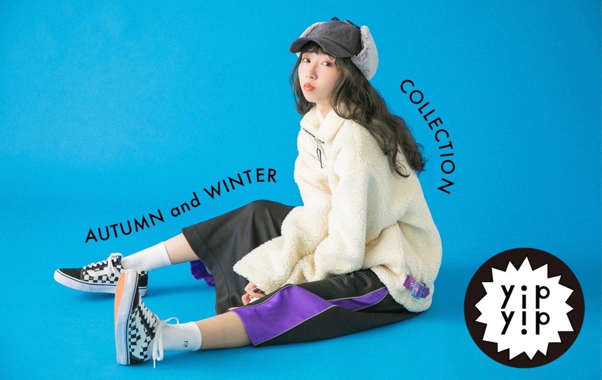
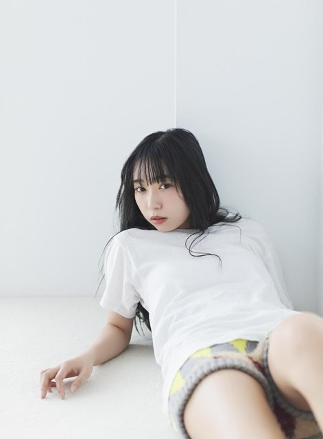
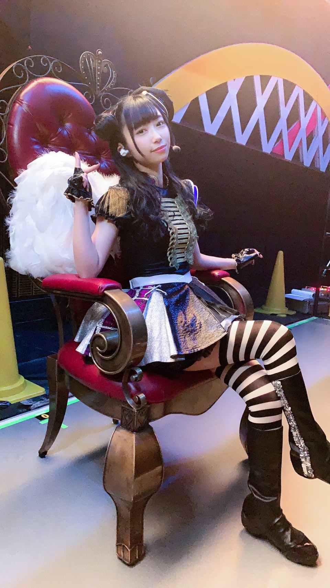
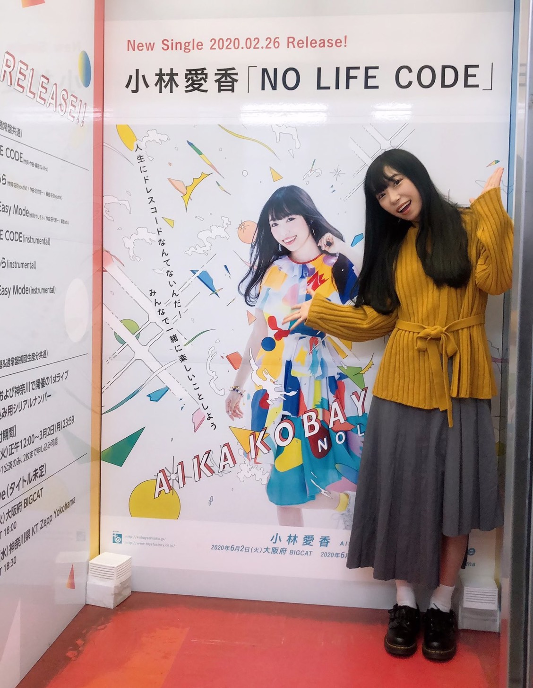
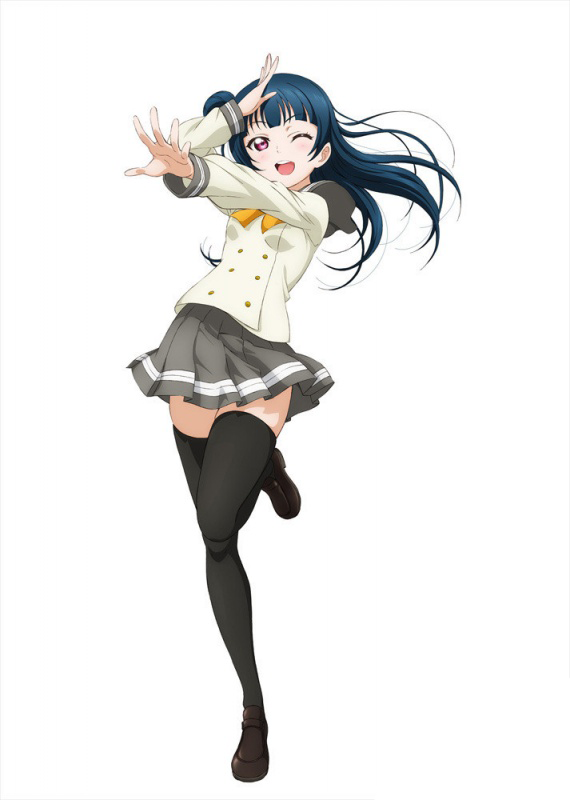
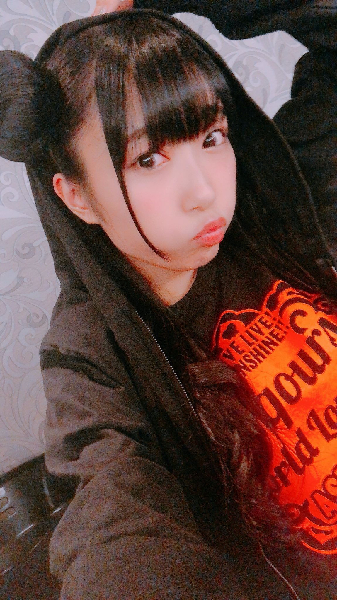
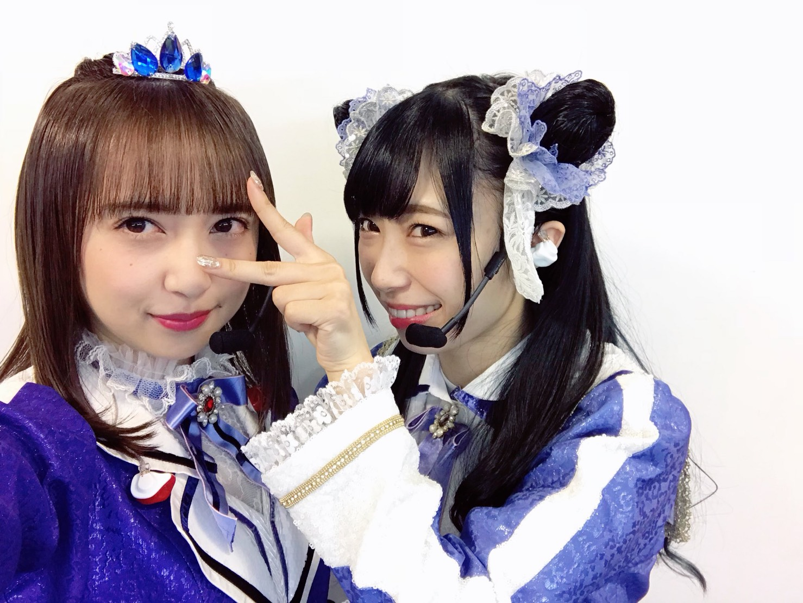

人物介紹

小林愛香（1993年10月23日－）綽號：あいきゃん（aikyan）、きゃん（kyan）。2011年，演唱動畫《零度戰姬》的片尾曲《君を守りたい》而作為歌手出道。2月23日與演唱片頭曲的MARiA共同發行合作單曲《COLOR / 君を守りたい》。 2012年4月25日發行第一張個人名義的單曲《future is serious》，收錄動畫《女皇之刃 叛亂》的片尾曲《future is serious》。
2015年被選為『LoveLive! Sunshine!!』津島善子（夜羽）的聲優，作為聲優的初次出道。
出生於神奈川，父親是青森人，母親是沖繩和韓國混血。 身高156cm與夜羽一樣高！ 曾考取並取得保育士證，並常與小表弟互動。 曾於2014年10月1日開始在YouTube上發布自製的視頻，直至2015年1月14日暫停更新，期間共發布過6個視頻。

2019年10月底在個人活動上宣布將在2020年“正式出道”。11月6日在個人活動上宣布將於2020年2月26日發售“第一張”單曲CD《NO LIFE CODE》。

個性 是個淚點很低的小女生，在Aqours的早期活動中經常因為看到會場大量觀眾的熱情應援而哭出來。在Aqours團體中是小惡魔擔當。
擅長跳舞（事務所的簡介上對此有著如下的詳細介紹：HIP-HOP、R&B 、LA-STYLE）。喜歡照相機和洋服。 喜歡《心跳！光之美少女》並數次在推特曬出相關周邊。 養過兩條分別叫ライラ和ショコラ的狗。
與同為Aqours組合中的國木田花丸的聲優高槻加奈子在雜誌採訪上宣布過雙箭頭喜歡，經常私下偷約會。
作品
電視動畫
2016


LoveLive! Sunshine!!（津島善子）
2017
LoveLive! Sunshine!! 第二季（津島善子）舌尖上的義大利（花月李依）

音樂專輯
2020年2月26日 1st單曲
NO LIFE CODE